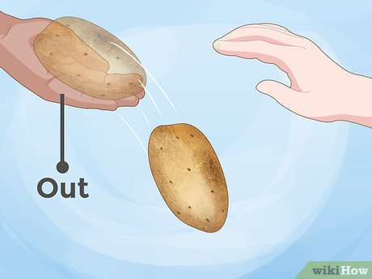

Use your many eyes to asses your environment for danger. If you notice a knife, aluminum foil, or masher in your vicinity, it's time to take action to save your life!
examples of dangerous tools
Let your body weight and gravity pull you out of the dangerous situation. Fall out of the hands of your captor to safety.
Roll away from the dangerous utensils towards a cool dark place where you can hide.